Playful visual timers
Colorful animated countdowns play with cheerful background music, so kids can see how much time is left and stay with what they started.
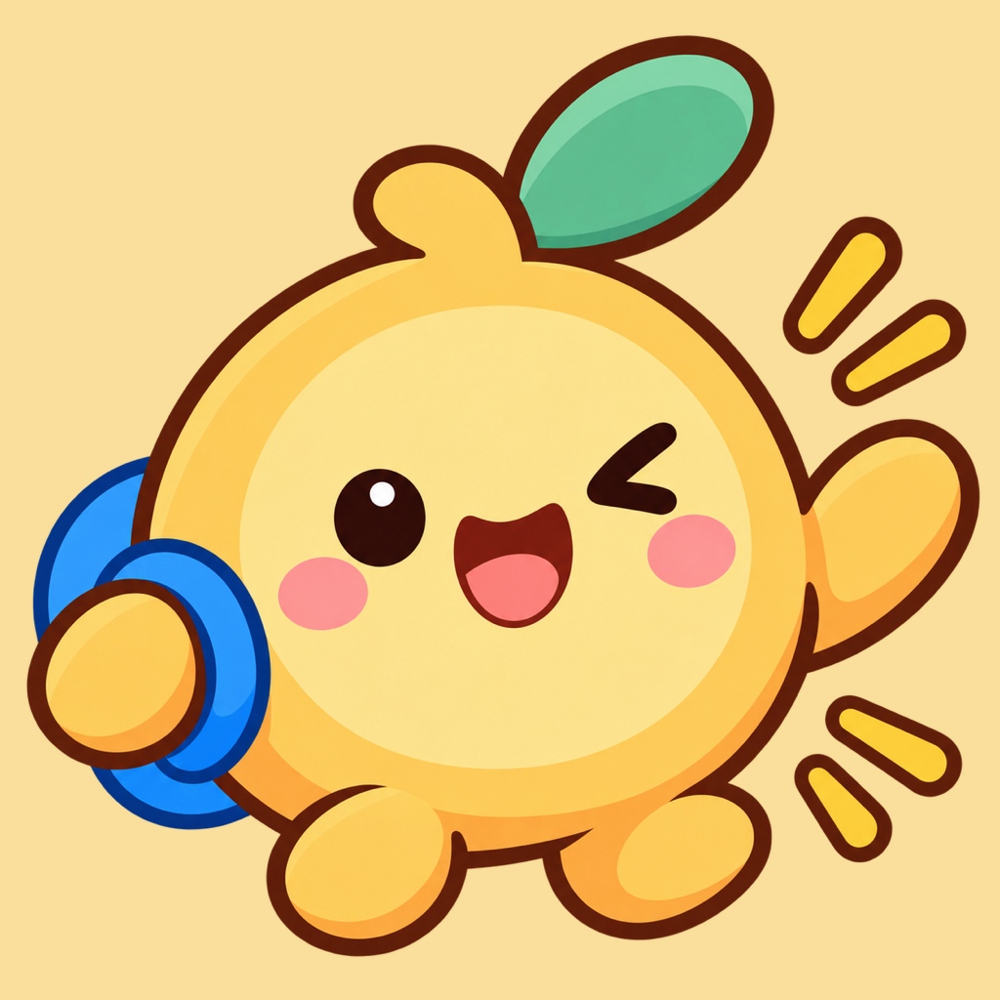
Kids visual timer
Routines, Activities & Focus
Less stalling. More doing.
Make everyday routines easier, happier, and more fun. Tocky is a playful visual timer and alarm that helps kids get started, stay engaged, and finish everyday activities — getting dressed, brushing teeth, cleaning up toys, bedtime — with less stalling and fewer reminders.
Colorful animations, cheerful music, and small rewards help kids understand time, stay motivated, and build independence, one activity at a time.
Download on the App StoreFree, with in-app purchases. Tocky Pro Monthly is $1.99. Tocky Pro Lifetime is $12.99.
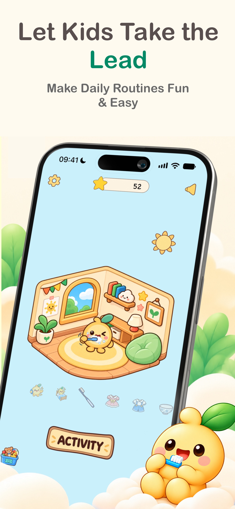
iPhone, from the App Store listing.
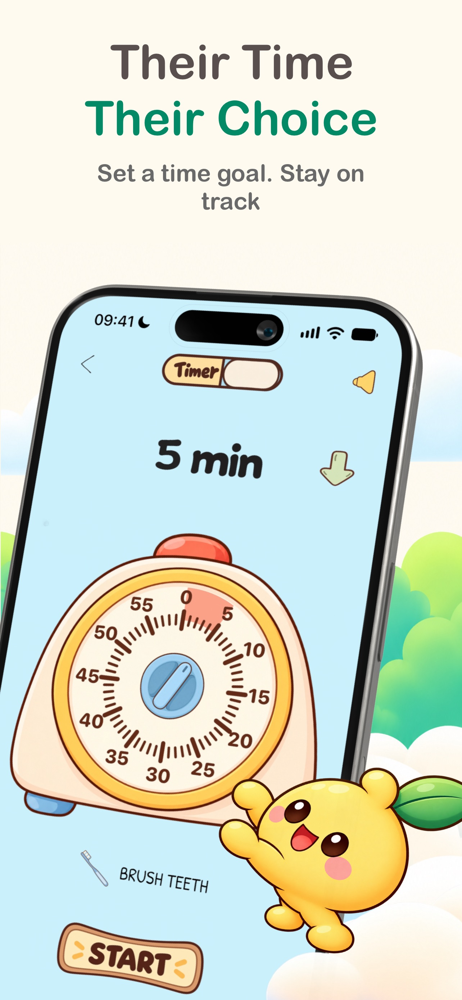
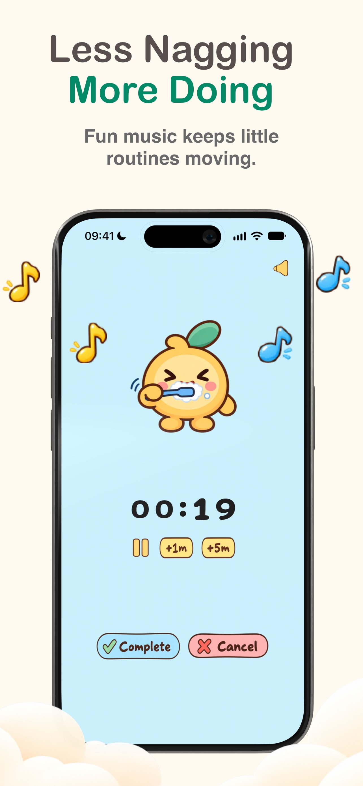
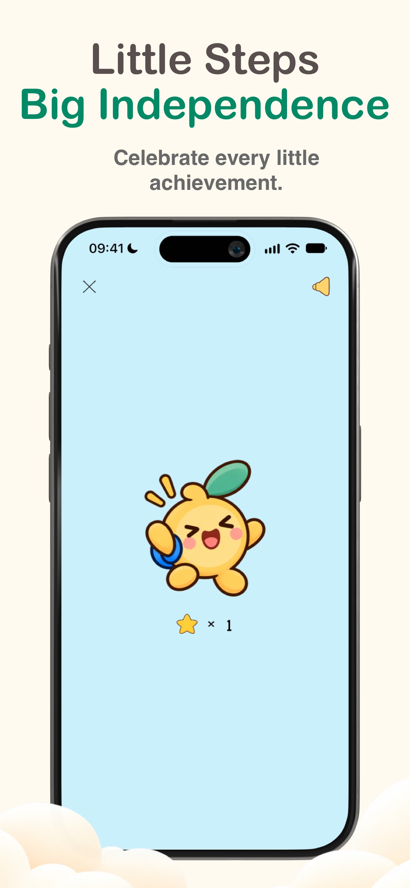
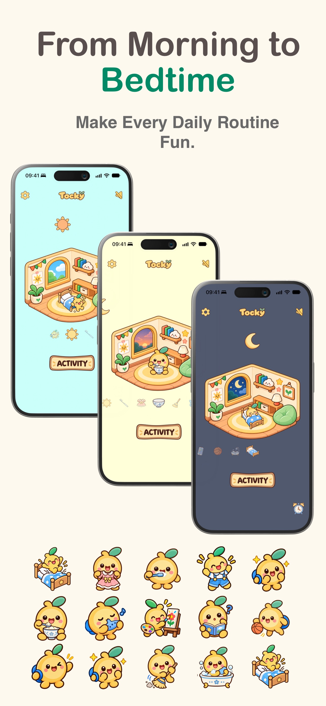
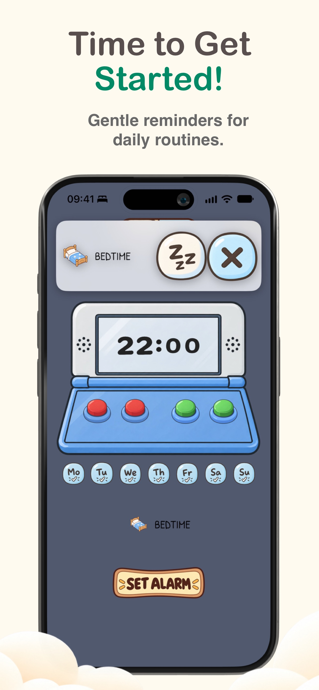
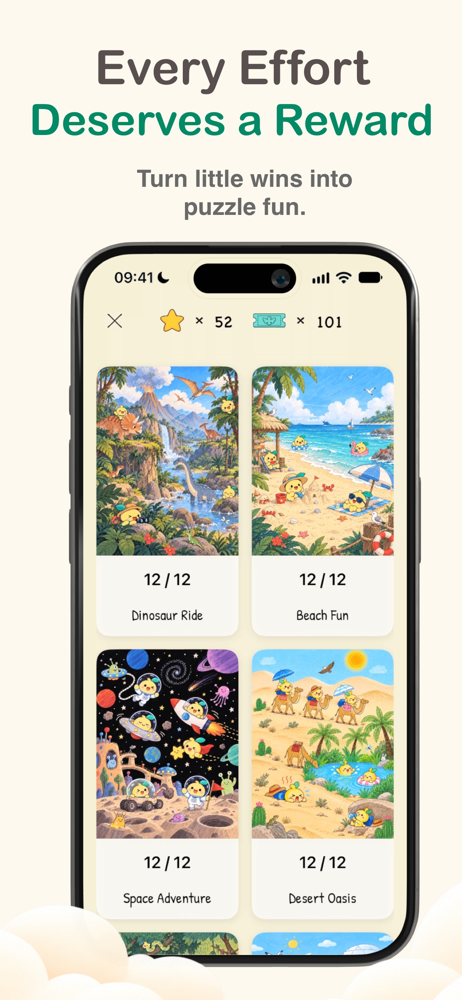
The same timer, on a bigger screen.
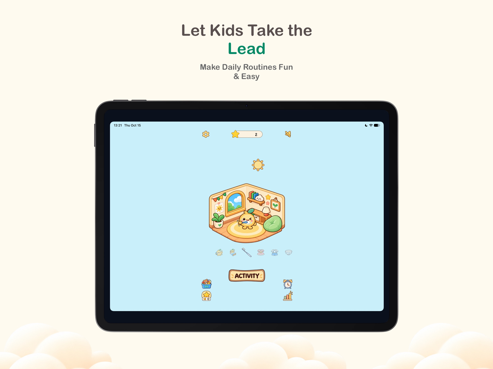
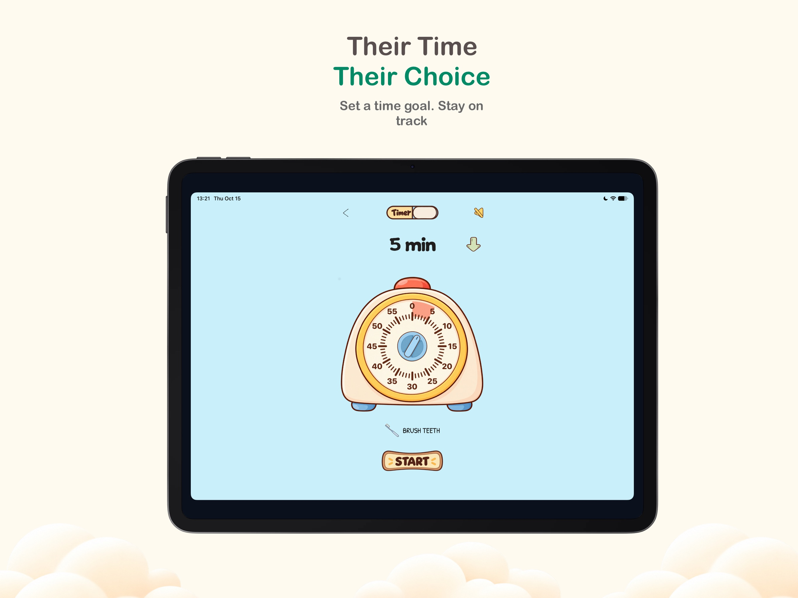
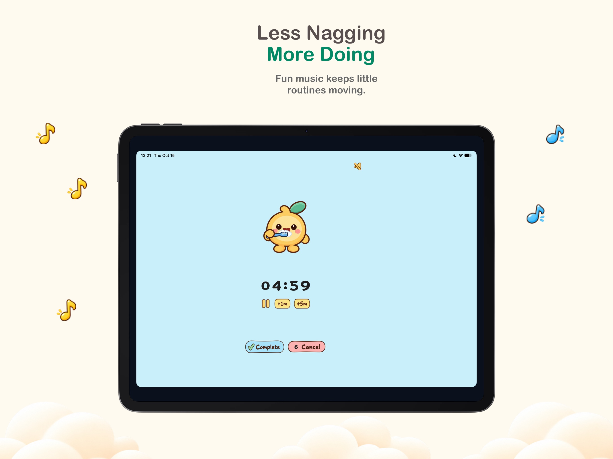
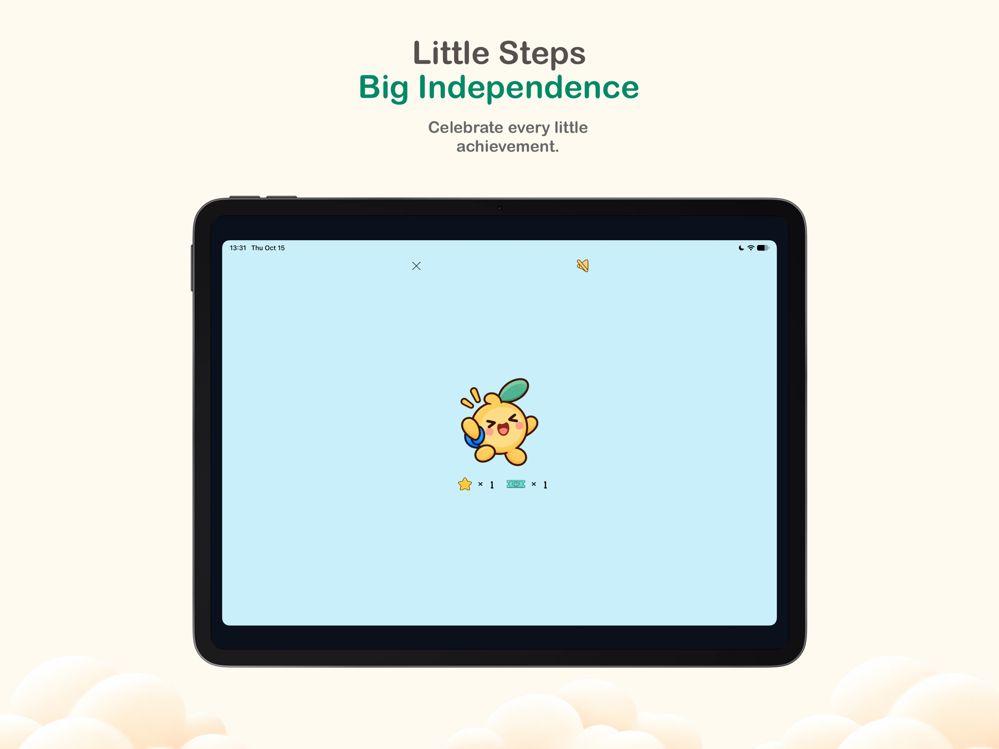
Choose an activity, set the time, and start. Tocky keeps the rest of the screen simple: large controls, hand-drawn pictures, and nothing complicated to set up.
Colorful animated countdowns play with cheerful background music, so kids can see how much time is left and stay with what they started.
Count down when an activity has a time limit, or count up to see how long something takes. Either way, time stays easy to see.
Gentle reminders say when it is time to start the next activity, so transitions are easier for the whole family.
Finished activities earn stars. Kids collect stars, earn game tickets, and exchange those tickets for puzzle adventures.
Spend earned tickets on colorful puzzle adventures. A little fun makes each finished activity worth celebrating.
Large controls, colorful hand-drawn illustrations, cheerful music, and friendly animations. No complicated settings.
Tocky runs on iPhone and iPad. Activities and rewards sync with iCloud, so they stay together across devices.
When time is visible and small wins get a celebration, kids can take a more active part in the routines of the day.
The moments that tend to stall, from the first activity of the morning through bedtime.
· Version 1.2.0
The countdown animation is clearer, so kids can see time passing. When 20 seconds remain, a gentle reminder sound plays and the background music speeds up to 1.2×.
Tocky is free on the App Store for iPhone and iPad. Tocky Pro Monthly is $1.99, and Tocky Pro Lifetime is $12.99.
Download on the App Store